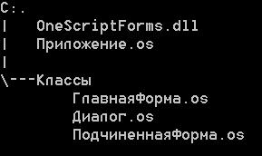
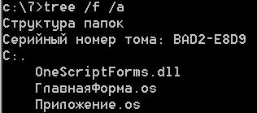

СоздатьФорму(<Сценарий>)
Тип: Форма (Form).
Создаёт новый экземпляр класса Форма (Form), созданный на основе подключенного сценария.
Использовать библиотеку OneScriptForms.dll можно в стиле приложения или стиле скрипта.
Есть некоторые различия в этих двух вариантах.
Стиль приложения основывается на использовании классов, описанных в файлах скриптов *.os. Эти файлы расположены в каталоге Классы, рядом с которым находится библиотека и главный скрипт (файл Приложение.os на рисунке).
В главном скрипте нужно обеспечить работу с классами директивой #Использовать ".\" .
Иначе подключить скрипт можно командой ПодключитьСценарий("C:\7\ГлавнаяФорма.os", "ГлавнаяФорма");.

//=== Содержимое файла Приложение.os ===
ПодключитьВнешнююКомпоненту("C:\7\OneScriptForms.dll");
Ф = Новый ФормыДляОдноСкрипта();
ПодключитьСценарий("C:\7\ГлавнаяФорма.os", "ГлавнаяФорма");
Сценарий1 = Новый ГлавнаяФорма();
ГлавнаяФорма1 = Ф.СоздатьФорму(Сценарий1);
ГлавнаяФорма1.Показать();
ГлавнаяФорма1.Активизировать();
Сообщить("Запуск обработки событий из главного скрипта");
Ф.ЗапуститьОбработкуСобытий();
//======================================
//=== Содержимое файла ГлавнаяФорма.os ===
Перем ВремяСоздания;
Перем Ф;
Процедура ПриСозданииФормы(Форма) Экспорт
ЭтаФорма = Форма;
ЭтаФорма.Текст = "ГлавнаяФорма";
ЭтаФорма.Отображать = Истина;
Кнопка1 = Ф.Кнопка();
Кнопка1.Родитель = ЭтаФорма;
Кнопка1.Текст = "Кнопка1";
Кнопка1.Границы = Ф.Прямоугольник(10, 10, 180, 30);
Кнопка1.Нажатие = Ф.Действие(ЭтотОбъект, "Кнопка1_Нажатие");
КонецПроцедуры
Процедура Кнопка1_Нажатие() Экспорт
Сообщить("Кнопка1_Нажатие " + ВремяСоздания);
КонецПроцедуры
Ф = Новый ФормыДляОдноСкрипта();
ВремяСоздания = ТекущаяУниверсальнаяДатаВМиллисекундах();
//======================================
Вот еще один более развернутый пример создания формы из сценария. Файлы раположите как на рисунке.
//=== Содержимое файла Приложение.os ===
#Использовать ".\"
ПодключитьВнешнююКомпоненту("C:\444\111\OneScriptForms\OneScriptForms\bin\Debug\OneScriptForms.dll");
Ф = Новый ФормыДляОдноСкрипта();
ГлавнаяФорма1 = Ф.СоздатьФорму(Новый ГлавнаяФорма());
ГлавнаяФорма1.Показать();
ГлавнаяФорма1.Активизировать();
Сообщить("Запуск обработки событий из главного скрипта");
Ф.ЗапуститьОбработкуСобытий();
//======================================
//=== Содержимое файла ГлавнаяФорма.os ===
Перем ЭтаФорма;
Перем ВремяСоздания;
Перем Ф;
Перем ПолеСписка1;
Перем ПодчиненнаяФорма;
Процедура ПриСозданииФормы(Форма) Экспорт
ЭтаФорма = Форма;
ЭтаФорма.Текст = "ГлавнаяФорма";
ЭтаФорма.Отображать = Истина;
Кнопка1 = Ф.Кнопка();
Кнопка1.Родитель = ЭтаФорма;
Кнопка1.Текст = "Кнопка1";
Кнопка1.Границы = Ф.Прямоугольник(10, 10, 180, 30);
Кнопка1.Нажатие = Ф.Действие(ЭтотОбъект, "Кнопка1_Нажатие");
Кнопка2 = Ф.Кнопка();
Кнопка2.Родитель = ЭтаФорма;
Кнопка2.Текст = "Открыть диалог";
Кнопка2.Лево = Кнопка1.Лево;
Кнопка2.Ширина = Кнопка1.Ширина;
Кнопка2.Высота = Кнопка1.Высота;
Кнопка2.Ниже(Кнопка1, 10);
Кнопка2.Нажатие = Ф.Действие(ЭтотОбъект, "Кнопка2_Нажатие");
Кнопка3 = Ф.Кнопка();
Кнопка3.Родитель = ЭтаФорма;
Кнопка3.Текст = "Создать подчиненную форму";
Кнопка3.Лево = Кнопка1.Лево;
Кнопка3.Ширина = Кнопка1.Ширина;
Кнопка3.Высота = Кнопка1.Высота + 10;
Кнопка3.Ниже(Кнопка2, 10);
Кнопка3.Нажатие = Ф.Действие(ЭтотОбъект, "Кнопка3_Нажатие");
КонецПроцедуры
Процедура Кнопка1_Нажатие() Экспорт
Сообщить("Кнопка1_Нажатие " + ВремяСоздания);
КонецПроцедуры
Процедура Кнопка2_Нажатие() Экспорт
Сообщить("Кнопка2_Нажатие " + ВремяСоздания);
Сценарий1 = Новый Диалог();
Диалог = Ф.СоздатьФорму(Сценарий1);
ЗначениеВозврата = Диалог.ПоказатьДиалог();
Если ЗначениеВозврата = Ф.РезультатДиалога.Да Тогда
Сообщить("Значение возврата диалога: " + Диалог.Сценарий.ДанныеРаботыДиалога);
ИначеЕсли ЗначениеВозврата = Ф.РезультатДиалога.Нет Тогда
Сообщить("Значение возврата диалога: " + Диалог.Сценарий.ДанныеРаботыДиалога);
ИначеЕсли ЗначениеВозврата = Ф.РезультатДиалога.Отмена Тогда
Сообщить("Значение возврата диалога: " + Диалог.Сценарий.ДанныеРаботыДиалога);
КонецЕсли;
КонецПроцедуры
Процедура Кнопка3_Нажатие() Экспорт
ПодчиненнаяФорма = Ф.СоздатьФорму(Новый ПодчиненнаяФорма());
ПодчиненнаяФорма.Показать();
КонецПроцедуры
Ф = Новый ФормыДляОдноСкрипта();
ВремяСоздания = ТекущаяУниверсальнаяДатаВМиллисекундах();
//======================================
//=== Содержимое файла Диалог.os ===
Перем ВремяСоздания;
Перем Ф;
Перем ЭтаФорма;
Перем ПолеСписка1;
Перем ДанныеРаботыДиалога Экспорт;
Перем Стр;
Процедура ПриСозданииФормы(Форма) Экспорт
ЭтаФорма = Форма;
ЭтаФорма.Текст = "Диалог " + ВремяСоздания;
ЭтаФорма.Ширина = 450;
ЭтаФорма.Высота = 250;
ПолеСписка1 = Ф.ПолеСписка();
ПолеСписка1.Родитель = ЭтаФорма;
ПолеСписка1.Границы = Ф.Прямоугольник(10, 10, 300, 150);
ПолеСписка1.РежимВыбора = Ф.РежимВыбора.МножественныйПростой;
ПолеСпискаЭлементы1 = ПолеСписка1.Элементы;
ПолеСпискаЭлементы1.Добавить(Ф.ЭлементСписка("Строка55", "СтрЗначение"));
ПолеСпискаЭлементы1.Добавить(Ф.ЭлементСписка("Дата", (Дата(2019,01,02,03))));
ПолеСпискаЭлементы1.Добавить(Ф.ЭлементСписка("Булево", Ложь));
ПолеСпискаЭлементы1.Добавить(Ф.ЭлементСписка("Число", 156.54888));
ПолеСпискаЭлементы1.Добавить(Ф.ЭлементСписка("Объект", ЭтаФорма));
ПолеСпискаЭлементы1.Добавить(Ф.ЭлементСписка("Массив", Новый Массив()));
ПолеСписка1.УстановитьВыбор(0, Ложь);
ПолеСписка1.УстановитьВыбор(1, Истина);
ПолеСписка1.УстановитьВыбор(2, Ложь);
ПолеСписка1.УстановитьВыбор(3, Истина);
ПолеСписка1.УстановитьВыбор(4, Ложь);
Кнопка1 = ЭтаФорма.ЭлементыУправления.Добавить(Ф.Кнопка());
Кнопка1.Текст = "Выбранные";
Кнопка1.Ширина = 100;
Кнопка1.Правее(ПолеСписка1, 10);
Кнопка1.Нажатие = Ф.Действие(ЭтотОбъект, "Кнопка1_Нажатие");
// если установить Истина, то эта команда не позволит открыть диалог в модальном режиме
ЭтаФорма.Отображать = Ложь;
КнопкаОК = Ф.Кнопка();
КнопкаОК.Родитель = ЭтаФорма;
КнопкаОК.Текст = "ОК";
КнопкаОК.Лево = ПолеСписка1.Лево;
КнопкаОК.Ширина = 80;
КнопкаОК.Высота = 25;
КнопкаОК.Ниже(ПолеСписка1, 10);
КнопкаОК.Нажатие = Ф.Действие(ЭтотОбъект, "КнопкаОК_Нажатие");
КнопкаОтмена = Ф.Кнопка();
КнопкаОтмена.Родитель = ЭтаФорма;
КнопкаОтмена.Текст = "Отмена";
КнопкаОтмена.Ширина = КнопкаОК.Ширина;
КнопкаОтмена.Высота = КнопкаОК.Высота;
КнопкаОтмена.Ниже(ПолеСписка1, 10);
КнопкаОтмена.Правее(КнопкаОК, 10);
КнопкаОтмена.Нажатие = Ф.Действие(ЭтотОбъект, "КнопкаОтмена_Нажатие");
КонецПроцедуры
Процедура Кнопка1_Нажатие() Экспорт
ВыбранныеЭлементы1 = ПолеСписка1.ВыбранныеЭлементы;
Колич = ВыбранныеЭлементы1.Количество;
Если Колич > 0 Тогда
Стр = "Выбранные:" + Символы.ПС;
Для А = 0 По Колич - 1 Цикл
Эл = ВыбранныеЭлементы1.Элемент(А).Значение;
Стр = Стр + "- " + Эл + Символы.ПС;
КонецЦикла;
ОкноСообщений2 = Ф.ОкноСообщений();
ОкноСообщений2.Заголовок = "Выбранные";
ОкноСообщений2.Текст = Стр;
ОкноСообщений2.Показать();
КонецЕсли;
КонецПроцедуры
Процедура КнопкаОК_Нажатие() Экспорт
ДанныеРаботыДиалога = "ПРИНЯТО!";
ЭтаФорма.РезультатДиалога = Ф.РезультатДиалога.Да; // после установки результата диалога форма диалога закроется
КонецПроцедуры
Процедура КнопкаОтмена_Нажатие() Экспорт
ДанныеРаботыДиалога = "ОТКЛОНЕНО!";
ЭтаФорма.РезультатДиалога = Ф.РезультатДиалога.Нет; // после установки результата диалога форма диалога закроется
КонецПроцедуры
Ф = Новый ФормыДляОдноСкрипта();
ВремяСоздания = ТекущаяУниверсальнаяДатаВМиллисекундах();
ДанныеРаботыДиалога = "Форма закрыта без выбора";
Стр = "";
//======================================
//=== Содержимое файла ПодчиненнаяФорма.os ===
Перем ВремяСоздания;
Перем Ф;
Процедура ПриСозданииФормы(Форма) Экспорт
ЭтаФорма = Форма;
ЭтаФорма.Текст = "Подчиненная форма " + ВремяСоздания;
ЭтаФорма.Ширина = 450;
ЭтаФорма.Высота = 250;
ЭтаФорма.Отображать = Истина;
Кнопка = Ф.Кнопка();
Кнопка.Родитель = ЭтаФорма;
Кнопка.Текст = "Кнопка";
Кнопка.Границы = Ф.Прямоугольник(10, 10, 180, 30);
Кнопка.Нажатие = Ф.Действие(ЭтотОбъект, "Кнопка_Нажатие");
ЭтаФорма.Нажатие = Ф.Действие(ЭтотОбъект, "Нажатие");
КонецПроцедуры
Процедура Нажатие() Экспорт
Сообщить("ПодчиненнаяФорма_Нажатие " + ВремяСоздания);
КонецПроцедуры
Процедура Кнопка_Нажатие() Экспорт
Сообщить("Кнопка_Нажатие " + ВремяСоздания);
КонецПроцедуры
Ф = Новый ФормыДляОдноСкрипта();
ВремяСоздания = ТекущаяУниверсальнаяДатаВМиллисекундах();
//======================================
ФормыДляОдноСкрипта (OneScriptForms) Класс | Библиотека OneScriptForms